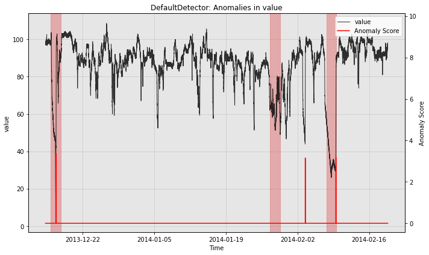

A Gentle Introduction to Anomaly Detection in Merlion
We begin by importing Merlion’s TimeSeries class and the data loader for the Numenta Anomaly Benchmark NAB. We can then divide a specific time series from this dataset into training and testing splits.
[1]:
from merlion.utils import TimeSeries
from ts_datasets.anomaly import NAB
time_series, metadata = NAB(subset="realKnownCause")[3]
train_data = TimeSeries.from_pd(time_series[metadata.trainval])
test_data = TimeSeries.from_pd(time_series[~metadata.trainval])
test_labels = TimeSeries.from_pd(metadata.anomaly[~metadata.trainval])
Time series /Users/abhatnagar/Desktop/Merlion_public/data/nab/realKnownCause/ec2_request_latency_system_failure.csv (index 2) has timestamp duplicates. Kept first values.
Time series /Users/abhatnagar/Desktop/Merlion_public/data/nab/realKnownCause/machine_temperature_system_failure.csv (index 3) has timestamp duplicates. Kept first values.
We can then initialize and train Merlion’s DefaultDetector, which is an anomaly detection model that balances performance with efficiency. We also obtain its predictions on the test split.
[2]:
from merlion.models.defaults import DefaultDetectorConfig, DefaultDetector
model = DefaultDetector(DefaultDetectorConfig())
model.train(train_data=train_data)
test_pred = model.get_anomaly_label(time_series=test_data)
Next, we visualize the model’s predictions.
[3]:
from merlion.plot import plot_anoms
import matplotlib.pyplot as plt
fig, ax = model.plot_anomaly(time_series=test_data)
plot_anoms(ax=ax, anomaly_labels=test_labels)
plt.show()

Finally, we can quantitatively evaluate the model. The precision and recall come from the fact that the model fired 3 alarms, with 2 true positives, 1 false negative, and 1 false positive. We also evaluate the mean time the model took to detect each anomaly that it correctly detected.
[4]:
from merlion.evaluate.anomaly import TSADMetric
p = TSADMetric.Precision.value(ground_truth=test_labels, predict=test_pred)
r = TSADMetric.Recall.value(ground_truth=test_labels, predict=test_pred)
f1 = TSADMetric.F1.value(ground_truth=test_labels, predict=test_pred)
mttd = TSADMetric.MeanTimeToDetect.value(ground_truth=test_labels, predict=test_pred)
print(f"Precision: {p:.4f}, Recall: {r:.4f}, F1: {f1:.4f}\n"
f"Mean Time To Detect: {mttd}")
Precision: 0.6667, Recall: 0.6667, F1: 0.6667
Mean Time To Detect: 1 days 10:32:30